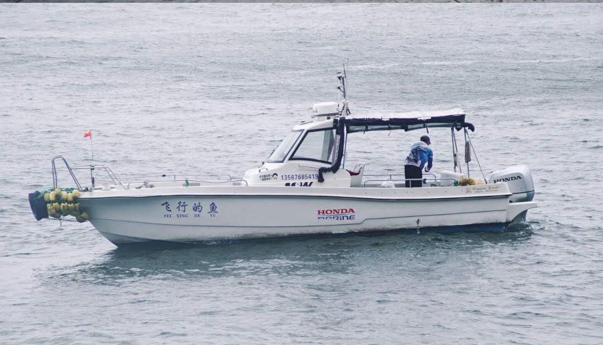

舟山走书
舟山走书又称滃洲走书，是一种浙江省的传统说唱艺术。源于定海马岙，是舟山群岛历史文化奇葩之一，约产生于1800年前后，后从六横传至镇海后，演化为蛟川走书。
祭海
渔民每泛出海之前，先要在船上祭祀神祇，烧化疏牒，俗称“行文书”。然后由老大将杯中酒与盘中肉抛入大海，称“酬游魂”，以求出海打鱼时平安无事。祭祀时要放一副“太平坊”，即棺材板，出海时，放在船上。棺材板冠以“太平坊”之名，与渔民在大海作业时很有可能被巨浪吞噬相关。
跳灶会
跳蚤会，又名跳灶会，系流传于舟山白泉的民俗舞蹈，因舞姿如跳蚤和妇女跳到灶上撒尿就能灭火的传说而得名。它的形式是男女对舞，男饰济公，女扮火神，意为“济公斗火神”。行会时，他（她）俩由粗草绳围成长方形，边舞边唱，唱法似“小热昏”一般，除原准备的曲调外，能触景生情，见机应唱，能吸引围观者兴趣。
Zhoushan culture
